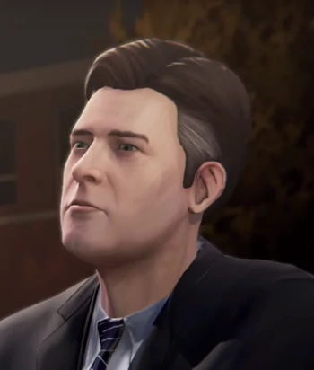
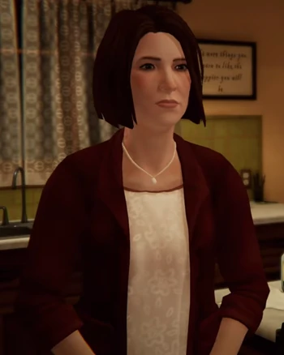
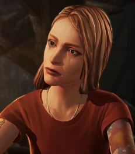

Rachel est une fille assez mystrérieuse, populaire, agréable et rebelle. Fêtarde, elle prend de la drogue et a un penchant pour le punk-rock, tout comme Chloe, l'exprimant autant par ses goûts musicaux que par son style vestimentaire, elle est intelligente et a un œil pour la photographie et l'art, tout comme Max. En considérant ses résultats scolaires et les efforts qu'elle a fait pour devenir un modèle, cela fait d'elle une personne très ambitieuse. Elle semble avoir une personnalité bienveillante, puisqu'elle est appréciée par ses proches. Rachel est plus girly et idéaliste que Chloe, ceci se reflétant par son amour pour le maquillage et son ambition de devenir mannequin.
Elle a disparu le lundi 22 avril 2013. Sa disparition est accentuée par les nombreux avis de recherches déposés par Chloe.


| Nom du personnage | Lien avec Rachel | Relation avec Rachel |
|---|---|---|
| Chloe, Elizabeth Price |
Elle est sa meilleure amie et amoureuse probablement | Elle sont très proches, Chloè dit même qu'elles s'aimaient |
| James Amber | Il est le père de Rachel | Rachel et son père "étaient" ou sont très proche en fonction du choix dans before the storm, il veut protéger sa fille |
| Rose Amber  |
Elle est la mère adoptive de Rachel | Elle tient beaucoup à Rachel | Sera Gearhardt  |
Elle est la mère biologique de Rachel | Elle a été séparer de sa fille par James suite à ses problèmes de drogue.Elle n'est pas proche de Rachel |
| Joyce Madsen |
Elle est la mère de Chloé sa meilleure amie | Leurs relations sont cordiale,Joyce a de l'affection pour Rachel. |
| Victoria Chase |
Elles sont "amies" | Victoria est jalouse de la notoriéte et de la popularité de Rachel |
Nathan, Joshua Prescott
| Racheln et lui traînent ensemble | Nathan est interesser par Rachel |
Mr Jefferson |
Il est professeur de photographie où Rachel étudie | Des rumeurs disent qui ont eu une relation |
Frank Bowers |
Le copain cacher | Il est supposé qu'elle se sert de Frank pour faciliter son accès à la drogue et satisfaire sa dépendance à cette dernière |
Rachel a un tatouage de dragon sur son mollet droit. Le symbole du dragon est lié à la renommée, la réputation et la carrière ainsi que la force et la puissance, qui sont tous applicables à la personnalité et à l'histoire de Rachel. Le symbole du dragon incarne aussi le désir et la passion sexuelle. En outre, les dragons en Orient sont associés à la sagesse, la longévité et la régénération, qui se réfère à ses performances académiques et intellectuelles, mais aussi sa persistance dans les cœurs et les souvenirs de la plupart des gens à Arcadia Bay et son omniprésence sur la ville. Le dragon est également connu pour servir de puissant gardien et guide, ce qui fait référence au rôle que Rachel a joué dans la vie de Chloe, mais aussi aux conseils que Rachel fournit indirectement à Max tout au long du jeu. Les dragons sont des messagers de l'équilibre et de la magie, nous encourageant à voir le monde à travers les yeux du mystère et de l'émerveillement, et ils sont aussi l'incarnation du pouvoir primordial. En alchimie, le dragon représente le chaos-monde qui contient un certain potentiel de l'ordre; le dragon est alors symbole de l'energie primordiale. Le mot dragon veut dire "voir clair"; "regard perçant".

JE NE SUISPAS FAN, Je pense que Rachel est une fille manipulatrice pour avoir ce qu'elle veut. Elle a une réelle amitié et un réel amour pour Chloe mais se sert d'elle pour partir d'Arcadia Bay, elle aime aussi Franck mais se sert de lui pour la drogue. J'ai un peu de mal à la "cerner". C'est une fille complexe.